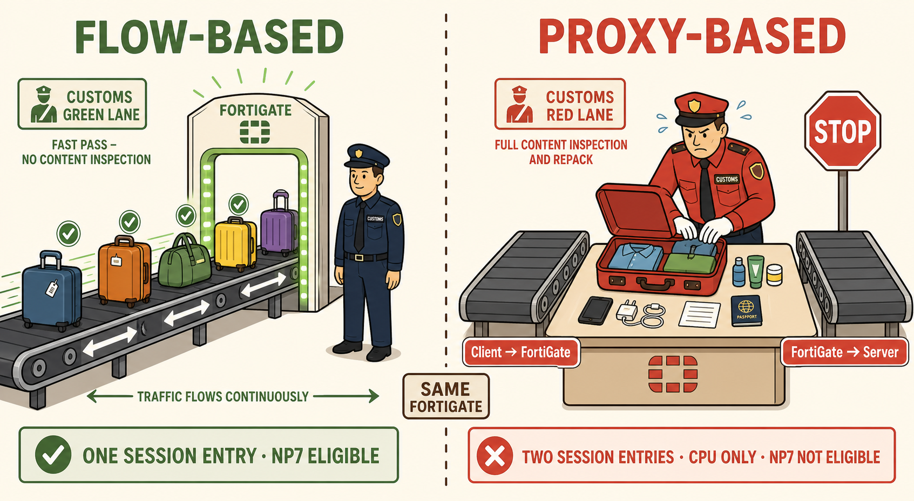

THE ANALOGY
Two Customs Lanes at the Same Airport
Imagine an international airport with two security lanes side by side. Both lanes have the same scanner technology. Both can detect the same threats. But they work completely differently.
🛃 CUSTOMS INSPECTION — THE ANALOGY ILLUSTRATED

Flow-Based — The Belt Never Stops
1
FortiGate acts as a forwarder. It examines each packet as it passes — like a scanner on a moving belt. The client-server TCP connection is never broken.
2
Verdict per packet, not per stream. The IPS engine flags threats in real time. If a packet is malicious, it's dropped immediately — no waiting for the full stream.
3
One session entry in the table. NP7 can take over after the session is established. CPU handles the handshake, then steps aside.
4
Recommended for high-throughput policies. Trading floors, data centre east-west, bulk file transfers. Lower latency, lower CPU cost.
Proxy-Based — The Belt Stops Entirely
1
FortiGate terminates the TCP connection. The client connects to FortiGate. FortiGate opens a second, separate connection to the server. Two TCP handshakes. Two session entries.
2
The full stream is buffered before inspection. FortiGate reassembles the complete application-layer object — the entire email, the full HTTP response, the complete file transfer.
3
CPU-bound. NP7 cannot offload. The NP7 cannot terminate TCP connections or reassemble streams — that's architecturally incompatible with its design. The entire session runs on CPU.
4
Enables features flow-based cannot. Category usage quotas, VoIP inspection, certain DLP modes, proxy authentication. The complete stream enables capabilities the in-flight approach cannot match.
THE CRITICAL INSIGHT
Same Depth. Different Timing.
This is the most common misconception about these two modes — and exactly what Fortinet tests on the exam.
Common misconception: "Flow-based only checks headers. Proxy-based does deep inspection." This is wrong. Both modes can read Layer 7 application data. The difference is not what is inspected — it is when the verdict is delivered relative to the flow of traffic.
⚡ Flow-Based — In Motion
- 1Packet arrives at FortiGate interface
- 2NP7 performs IP integrity check, ACL
- 3IPS engine inspects payload in real time via NTurbo
- 4Packet forwarded while inspection continues
- 5NP7 offloads subsequent packets — CPU steps aside
🛑 Proxy-Based — Buffered
- 1Client SYN arrives — FortiGate answers SYN/ACK
- 2FortiGate opens separate TCP connection to server
- 3Complete application stream buffered in CPU memory
- 4Full stream inspected — then action taken
- 5Traffic forwarded to server. CPU remains involved throughout.
Core Mental Model
In FortiOS 7.6, you do not explicitly choose flow or proxy per policy. The mode is inferred from the security profiles you attach. Add a proxy-only profile (VoIP inspection, certain DLP) and the entire policy silently becomes proxy-based — and loses NP7 offload eligibility immediately.
SIDE BY SIDE
The Complete Comparison
| Property | Flow-Based | Proxy-Based |
|---|---|---|
| TCP Connection Handling | Forwarded — original connection preserved end-to-end | Terminated — FortiGate is the endpoint; new connection opened to server |
| Session Table Entries | One entry per user connection | Two entries per user connection |
| NP7 Hardware Offload | Eligible — after session established | Never eligible — architecturally incompatible |
| CPU Usage | Low after session setup | High throughout session lifetime |
| Inspection Timing | Per-packet, real time | Per-stream, after full reassembly |
| Inspection Depth | Full Layer 7 — same as proxy | Full Layer 7 — same as flow |
| Latency Impact | Minimal | Higher — stream must be buffered before verdict |
| Category Usage Quota | Not available | Available |
| VoIP Inspection | Not available | Available |
| Proxy Authentication | Not available | Available |
| Best Used For | High-throughput policies: data centre, trading, bulk transfers | User traffic requiring deep content inspection or advanced features |
| Mixed Policy (both types) | ⚠ Proxy requirement wins — entire policy goes CPU-only. NP7 offload lost. | |
EXAM PERSPECTIVE
What Fortinet Actually Tests
🎯 NSE7 Exam-Critical Points
The mode is inferred, not explicitly set. In FortiOS 7.6, you do not choose "flow mode" or "proxy mode" on the policy. You choose security profiles. The presence of any proxy-only profile forces the entire policy into proxy mode.
A mixed policy never offloads. If a policy contains both flow-based and proxy-based profiles, proxy always wins. The NP7 will not offload any session from that policy. This is the all-or-nothing rule.
Depth is the same — timing is different. Exam distractors often claim flow-based "only inspects headers." Incorrect. Flow-based uses the same IPS engine and can inspect full application payloads. The difference is when the verdict is acted upon.
Two session entries is a proxy tell. Any question that describes "two session entries per connection" or "FortiGate terminates the TCP session" is describing proxy-based inspection.
NP7 offload requires flow-based profiles only. Proxy-based profiles on any policy = no offload. The NP7 cannot terminate TCP connections or buffer streams — this is an architectural constraint, not a configuration choice.
Proxy-only features to remember: Category usage quota, web profile override, VoIP inspection, certain DLP modes. Seeing any of these features in a question scenario implies proxy-based inspection is active.
MEMORY HOOK
The One Thing to Remember
The Belt Analogy — Three Facts in One Image:
1. Flow-based: Scanner on a moving belt. Traffic keeps flowing. One connection. NP7 takes over.
2. Proxy-based: Officer pulls bag off the belt entirely, opens it, repacks it, sends it on a new belt. Two connections. CPU does everything.
3. The belt analogy's key insight: The officer in both lanes has the same X-ray vision. What differs is whether the bag is moving or stopped when they use it.
1. Flow-based: Scanner on a moving belt. Traffic keeps flowing. One connection. NP7 takes over.
2. Proxy-based: Officer pulls bag off the belt entirely, opens it, repacks it, sends it on a new belt. Two connections. CPU does everything.
3. The belt analogy's key insight: The officer in both lanes has the same X-ray vision. What differs is whether the bag is moving or stopped when they use it.
🎨 Image Generation Prompt — Customs Analogy Scene
Flat minimalistic but highly detailed cartoon illustration. Split-panel composition showing two airport customs lanes side by side. Left panel (labelled "FLOW-BASED"): a moving conveyor belt with colourful luggage bags passing under a glowing scanner arch. A calm customs officer in a dark uniform stands beside the belt watching packets flow through without stopping the belt. Green checkmarks appear on cleared bags still moving. Sage green palette. Right panel (labelled "PROXY-BASED"): a stopped conveyor belt. A stressed customs officer in a red uniform stands at a table with one bag fully open and contents spread out for inspection. A second empty belt on the other side waits for the repacked bag to continue to the server. Two TCP connection labels shown: "Client → FortiGate" and "FortiGate → Server." Red and coral palette. Both panels share the same background cream colour (#faf5e9). Bold text annotations label key concepts: "ONE SESSION ENTRY / NP7 ELIGIBLE" on left, "TWO SESSION ENTRIES / CPU ONLY" on right. Warm modern colour palette. Clean bold line work. No gradients. No photorealism. Educational flat vector art.